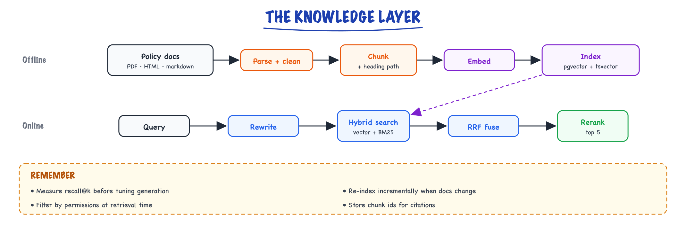

Complete build: the knowledge layer // Build & interview
Ingestion, chunking, indexing and retrieval for the build.
01 — At a glance

Policy documents are parsed, chunked with their heading path, embedded and indexed in Postgres for hybrid search; queries are rewritten, fused and reranked.
02 — New words
| Word | Meaning |
|---|---|
| Chunk | A passage cut from a document, small enough to embed and to paste into a prompt. The unit retrieval returns. |
| Heading trail | The chain of headings above a chunk, such as "Billing › Invoices › Codes", stored with it and prepended when embedding. |
| Content hash | A fingerprint (SHA-256) of a chunk's text. Unchanged hash means unchanged chunk, so re-indexing can skip it. |
| Dense retrieval | Finding chunks whose embedding vectors point in a similar direction to the query's (cosine similarity). Good at meaning, weak at exact strings. |
| Lexical retrieval (BM25, full-text) | Finding chunks that contain the query's words, weighting rare words more. Good at codes and names, blind to paraphrase. |
| IDF | Inverse document frequency: a word's weight grows as fewer chunks contain it. |
| HNSW | The graph index most vector stores use for approximate nearest-neighbour search: fast, slightly lossy. |
| Reciprocal rank fusion (RRF) | Merging ranked lists by summing \(1/(c + \text{rank})\) for each item across lists. Uses ranks only, so incompatible scores do not matter. |
| Cross-encoder reranker | A model that reads the query and one chunk together and outputs a relevance score. Slower than vector search, much more precise. |
| Recall@k | The fraction of the chunks needed to answer that appear in the top \(k\) results. |
| MRR | Mean reciprocal rank: the average of \(1/\text{rank}\) of the first correct chunk. Rewards putting it near the top. |
| ACL filter | Restricting retrieval to chunks the requesting user is allowed to read, applied inside the search query. |
The lesson
03 — The question
The support assistant must answer policy questions from about 1,200 internal documents, cite where each fact came from, never show a tier-1 agent a tier-2 contract, and say "I don't know" rather than invent a policy. The language model can do none of that by itself. Everything it knows about this company arrives through the few thousand tokens of evidence the knowledge layer puts in its prompt. If the right passage is not in those tokens, no prompt and no model can produce a grounded answer. That is why this build measures retrieval before it writes a single generation prompt.
The interview questions about this layer:
- How do you chunk the documents, and how would you know the chunking is good?
- Why hybrid search, and how exactly are two rankings combined?
- Where do permissions get enforced, and what goes wrong if you filter after searching?
- How do you measure retrieval separately from generation, and how much should you trust the numbers?
The running example is one real-shaped question from the build's evaluation set: "What does invoice code INV-ADJ-CR mean?" The answer lives in one chunk, billing-invoices#codes~2. We follow it from the document to the prompt, with the build's spec numbers (3,500-token answer prompt, p95 6 s, about $0.015 per answer) as constraints. The code and tables on this page (below this lesson) show the full ingestion module and the measured ablation; this lesson explains why each piece is shaped the way it is.
04 — Step 1: the prompt budget decides the chunk size
Chunk size is usually presented as folklore ("use 512 tokens"). In a real system it falls out of the budget. The answer prompt in the spec is about 3,500 tokens: roughly 1,200 for the fixed instructions and output format, 300 for the question and conversation, leaving about 2,000 tokens of evidence. The build passes the top 5 chunks, so each chunk can average about 400 tokens including its heading trail.
Why five and not twenty smaller ones? Two forces pull against each other:
- Smaller chunks embed more precisely (one topic per vector) but lose context: a 100-token fragment saying "this does not apply to annual plans" without the heading that says which policy "this" is will be retrieved and then misread.
- Larger chunks carry context but blur the embedding (one vector averaging three topics sits near none of them) and spend the evidence budget on irrelevant sentences.
The corpus is about 12 million tokens (1,200 documents averaging 10,000 tokens). The chunker on this page keeps a section whole when it is under 700 tokens and splits longer ones at paragraph boundaries with an 80-token overlap; because most sections are short, chunks average about 300 tokens of new text, or about 350 tokens once the overlap and heading trail are counted. \(12{,}000{,}000 / 300\) gives about 40,000 chunks, the number the spec sized storage on, and five average chunks use about 1,750 of the 2,000 evidence tokens. The occasional 700-token chunk is why the prompt assembler trims to the budget instead of trusting the average. The right size for your corpus is not argued; it is the row in the ablation table with the best Recall@5 that still fits the budget. The general trade-offs are in chunking.
05 — Step 2: cut along the document's structure
Fixed-size windows cut wherever the token count says, often mid-table or mid-list. The build instead walks the Markdown structure: a new section starts at every heading, long sections split at paragraph boundaries, and every chunk carries its heading trail. The chunk for our example is embedded as:
Billing › Invoices › Codes INV-ADJ-CR: credit adjustment raised when a refund is issued against a paid invoice. Appears as a negative line on the next statement. ...
The trail costs about 6 tokens and does two jobs. It gives the embedding the topic the paragraph never states ("Codes" under "Invoices"), and it tells the answer model where the passage sits when it is pasted into the prompt. In the page's ablation, moving from fixed 300-token windows to structure-aware chunks with trails raised Recall@5 from 0.64 to 0.74, more than any later change. Cheap changes to the data usually beat expensive changes to the model.
Each chunk also carries what the rest of the system needs: a stable anchor for citations, the document's access-control groups, a SHA-256 content hash, and the name of the embedding model that produced its vector. Document parsing for PDFs and HTML is covered in document ingestion.
06 — Step 3: indexing is a cheap, idempotent batch job
Embedding the whole corpus is about 40,000 chunks × 350 tokens = 14 million tokens. At an illustrative $0.02 to $0.13 per million tokens for hosted embedding models, a full re-index costs between about $0.28 and $1.82. Money is not the constraint; correctness is. Two rules make re-indexing safe to run every night:
- Upsert by content hash. A chunk whose hash already exists is skipped. If about 2% of documents change a day, about 800 chunks are re-embedded, a minute of work. Running the job twice changes nothing, which is what "idempotent" means and why a crashed run can simply be restarted.
- Pin the embedding model on every row. Vectors from two different embedding models live in unrelated spaces; a cosine similarity between them is a meaningless number that still looks like a similarity. If a model upgrade re-embeds only part of the index, recall drops silently. Storing
embed_modeland filtering on it turns that silent failure into a visible re-index task.
Deletions are the third rule people forget: a policy document that was withdrawn but whose chunks remain will be cited confidently. Ingestion must delete chunks for documents that no longer exist.
07 — Step 4: why dense search misses the invoice code
Dense retrieval embeds the query and returns the chunks whose vectors have the highest cosine similarity. It is excellent for paraphrase: "the customer wants their money back because it never arrived" finds the refund policy for lost shipments without sharing its words. (How embedding models produce these vectors is in embeddings; how HNSW finds neighbours quickly is in vector search.)
Now look at our query through the tokenizer. "INV-ADJ-CR" becomes six fragments: INV, -, AD, J, -C, R. The embedding model sees a vague invoice-related question with some letter noise. Its vector lands near every chunk about invoices and adjustments. In the build's run (illustrative, like all ranks on this page), the gold chunk comes back at rank 14 in the dense list: outside the top 5 the prompt receives, so Recall@5 for this query is 0.
The model did nothing wrong. An embedding represents meaning, and an invoice code's meaning is its identity: a string that must match exactly. Product names, error codes, SKUs and clause numbers all behave this way, and support corpora are full of them.
08 — Step 5: lexical search weights the rare token
Lexical search (BM25, or Postgres full-text ranking, which follows the same idea) scores chunks by the query words they contain, weighting each word by how rare it is. The BM25 inverse document frequency for a word that appears in \(n\) of \(N\) chunks is
\[ \text{idf} = \ln\!\left(\frac{N - n + 0.5}{n + 0.5} + 1\right) \]With \(N = 40{,}000\): "refund" appears in perhaps 4,000 chunks, idf ≈ 2.3; "INV-ADJ-CR" appears in 3, idf ≈ 9.3. One occurrence of the code outweighs four occurrences of "refund". The gold chunk comes back at rank 1.
Lexical search has the mirror-image weakness: the lost-shipment paraphrase shares almost no words with the policy it needs. Neither method dominates, which is the whole argument for running both. The page's ablation shows the effect by slice: hybrid search lifted the exact-term slice from 0.4 to 0.9 while leaving the paraphrase slice where dense search had it. More on combining them in hybrid search.
09 — Step 6: fusing two rankings with RRF
The two searches return scores on incompatible scales: cosine similarity between −1 and 1, and a full-text rank with no fixed range. Adding or averaging them needs normalisation that drifts as the corpus changes. Reciprocal rank fusion sidesteps the problem by using only ranks:
\[ \text{RRF}(d) = \sum_{\text{lists}} \frac{1}{c + \text{rank}(d)} \]where \(c\) is a damping constant, conventionally 60. A large \(c\) flattens the difference between rank 1 and rank 10, so one list cannot dominate on the strength of a single top hit. For our query, retrieving 30 from each list:
| Chunk | Dense rank | Lexical rank | RRF score |
|---|---|---|---|
| invoices overview | 1 | 9 | \(1/61 + 1/69 = 0.03089\) |
| codes~2 (gold) | 14 | 1 | \(1/74 + 1/61 = 0.02991\) |
| credit notes | 2 | 20 | \(1/62 + 1/80 = 0.02863\) |
| changelog | absent | 2 | \(1/62 = 0.01613\) |
The gold chunk moves from rank 14 (dense) to rank 2 (fused): Recall@5 goes from 0 to 1 for this query. It is not first; the overview chunk, decent in both lists, edges it out. That is RRF's character: it rewards agreement between retrievers. Putting the single best chunk first is the next stage's job.
10 — Step 7: reranking the pool, and its hard ceiling
Vector and lexical search score the query and each chunk independently: the chunk's vector was computed months ago without knowing the question. A cross-encoder reads the query and a candidate chunk together in one forward pass, so it can notice that the overview chunk mentions invoice codes in general while codes~2 defines this exact one. It scores each of the 30 fused candidates and keeps the best 5. On our query, the gold chunk goes to rank 1.
The cost is bounded and worth computing: 30 pairs of about 370 tokens (a 350-token chunk plus the question) is about 11,000 tokens through a small model per query, around 200 ms in the latency budget from the spec. Reranking 300 candidates instead would cost ten times as much for little gain, because of a ceiling worth saying out loud in interviews:
A reranker can only reorder what it is given. Final Recall@5 can never exceed the recall of the candidate pool (Recall@30 of the fused list). If the gold chunk is not in the 30, no reranker recovers it. Measure pool recall separately; when it is low, fix retrieval (chunking, hybrid, query rewriting), not the reranker.
This is exactly the diagnosis in the page's multi-hop walkthrough: the downgrade chunk never entered the pool, so the fix was splitting the query into two searches. Details of reranker models in reranking.
11 — Step 8: permissions belong inside the search
Every chunk carries the access groups of its source document. The user's groups come from their login token, set by the gateway, never from anything the client or the model says. The question is where to apply the filter.
The tempting way is to search the whole index for the top 30, then drop chunks the user may not read. Simulate it: 40,000 random unit vectors, a user who may read 10% of them, 200 random queries, exact search. Searching first and filtering afterwards leaves on average 3.0 results instead of 5, and only 60% of the user's true top 5 among them. The other 40% were ranked below position 30 in the global list because nine-tenths of the index belonged to other people. The same trap exists inside an approximate index even when you write the filter in SQL: an HNSW scan collects a fixed number of candidates (hnsw.ef_search, 40 by default in pgvector) and the filter is applied to those, so a selective filter can return fewer rows than the LIMIT asks for.
The correct approaches, in order of preference for this build:
- Filter inside the query (
WHERE acl_groups && :user_groups) and let the store keep searching until it has enough matching rows. Recent pgvector versions support iterative index scans for exactly this; check your version. See pgvector. - Partition by access group when groups are few and large (here: tier-1 and tier-2), so each search runs over an index containing only readable chunks.
Never filter in the prompt ("only use sources the user may see"). A model cannot leak a chunk it never received, and it can leak anything it did. Security covers this boundary in general.
12 — Step 9: measuring retrieval, and how far to trust it
The eval set is 75 questions, each labelled with the anchor of the chunk (or chunks) that answers it, in five slices: common, exact-term, paraphrase, multi-hop, unanswerable. Two metrics per question:
- Recall@5: fraction of gold chunks in the top 5. For our query: dense 0.0, lexical 1.0, fused 1.0.
- MRR: \(1/\text{rank}\) of the first gold chunk. Dense \(1/14 = 0.071\), lexical 1.0, fused 0.5, reranked 1.0. MRR separates "found it at rank 5" from "found it at rank 1", which matters because models use evidence at the top of a long context more reliably than evidence buried in the middle.
Report every metric per slice, not only in aggregate. An aggregate of 0.90 hid a multi-hop slice at 0.40 in this build. Then be honest about resolution: the multi-hop slice has 5 questions, so one question moves it by 20 points; the exact-term slice has 10, so one question is 10 points. Slice numbers tell you where to look; they are too coarse to prove a 3-point improvement. Grow the slices that matter from production failures (the weekly triage on the ship page feeds them).
The unanswerable slice is graded differently: the correct outcome is that generation abstains. A retrieval layer always returns something, so abstention is decided downstream by the answer prompt ("INSUFFICIENT_EVIDENCE") and checked by the deterministic citation verifier. Track both failure directions: answering the unanswerable, and abstaining on answerable questions after a prompt is tightened.
13 — Choosing settings
| Knob | Build's value | How it was chosen | Revisit when |
|---|---|---|---|
| Chunk size | ~300 tokens average (700 cap), structure-aware, plus trail | evidence budget ÷ 5, then ablation | prompt budget or document style changes |
| Candidates per retriever | 30 | pool Recall@30 near its plateau | pool recall drops on a slice |
| RRF constant \(c\) | 60 | convention; insensitive in practice | rarely |
| Rerank to | top 5 | evidence budget | prompt budget changes |
| Query rewrite | only multi-part questions (heuristic gate) | fixed multi-hop slice without touching common slice | a new slice fails on pool recall |
| ACL enforcement | in SQL, from the token | never negotiable | never |
14 — In code: the metrics, RRF and the filter trap
The first block runs as is (numpy only) and reproduces every number in this lesson. The second is the production query shape for Postgres with pgvector, written against its documented operators.
import numpy as np def recall_at_k(retrieved, gold, k): return len(set(retrieved[:k]) & set(gold)) / len(gold) def mrr(retrieved, gold): for i, c in enumerate(retrieved, 1): if c in gold: return 1 / i return 0.0 def rrf(*rankings, c=60): score = {} for ranking in rankings: for r, doc in enumerate(ranking, 1): score[doc] = score.get(doc, 0) + 1 / (c + r) return sorted(score, key=score.get, reverse=True), score # the running query: "What does invoice code INV-ADJ-CR mean?" dense = ["overview", "credit-notes", "refund-adjust", "tax-lines", "late-fees", "dunning", "currency", "proration", "disputes", "receipts", "po-numbers", "vat", "statements", "codes~2"] # gold at 14 lexical = ["codes~2", "changelog", "codes~1", "exports", "api-errors", "audit", "ledger", "reports", "overview"] # gold at 1, overview at 9 lexical += ["lex%d" % i for i in range(10, 20)] + ["credit-notes"] # credit-notes at 20 fused, s = rrf(dense, lexical) gold = ["codes~2"] print("dense R@5 %.1f MRR %.3f" % (recall_at_k(dense, gold, 5), mrr(dense, gold))) print("lexical R@5 %.1f MRR %.3f" % (recall_at_k(lexical, gold, 5), mrr(lexical, gold))) print("fused R@5 %.1f MRR %.3f" % (recall_at_k(fused, gold, 5), mrr(fused, gold))) print("fused top 4:", [(d, round(s[d], 5)) for d in fused[:4]]) # ACL filtering: post-filter vs filter-aware search, exact search on random vectors rng = np.random.default_rng(0) N, D = 40_000, 64 X = rng.standard_normal((N, D)).astype(np.float32) X /= np.linalg.norm(X, axis=1, keepdims=True) visible = rng.random(N) < 0.10 # this user may read 10% of chunks post, filled = [], [] for _ in range(200): q = rng.standard_normal(D).astype(np.float32); q /= np.linalg.norm(q) sim = X @ q true5 = set(np.argsort(-np.where(visible, sim, -9))[:5]) # filter inside the search top30 = np.argsort(-sim)[:30] # search, then filter kept = [i for i in top30 if visible[i]][:5] post.append(len(true5 & set(kept)) / 5) filled.append(len(kept)) print("post-filter: avg results %.1f of 5, recall@5 vs filtered truth %.2f" % (np.mean(filled), np.mean(post)))
Output: dense R@5 0.0 and MRR 0.071; lexical 1.0 and 1.000; fused 1.0 and 0.500; fused top four overview 0.03089, codes~2 0.02991, credit-notes 0.02863, changelog 0.01613; post-filter 3.0 results and recall 0.60.
-- Hybrid retrieval with the ACL filter inside both searches (Postgres + pgvector).
-- $1 = query embedding, $2 = query text, $3 = user's groups (from the auth token).
WITH dense AS (
SELECT chunk_id, row_number() OVER (ORDER BY dist) AS r
FROM (SELECT chunk_id, embedding <=> $1 AS dist
FROM chunks
WHERE acl_groups && $3 AND embed_model = 'embed-v3'
ORDER BY embedding <=> $1
LIMIT 30) d
),
lex AS (
SELECT chunk_id, row_number() OVER (ORDER BY rank DESC) AS r
FROM (SELECT chunk_id, ts_rank_cd(tsv, q) AS rank
FROM chunks, websearch_to_tsquery('english', $2) AS q
WHERE tsv @@ q AND acl_groups && $3
ORDER BY rank DESC
LIMIT 30) l
)
SELECT chunk_id, sum(1.0 / (60 + r)) AS rrf
FROM (SELECT * FROM dense UNION ALL SELECT * FROM lex) u
GROUP BY chunk_id
ORDER BY rrf DESC
LIMIT 30; -- these 30 go to the cross-encoder, which keeps 5
The ordering inside each subquery is what lets Postgres use the HNSW and GIN indexes; the window function numbers the rows only after the limit. With a selective acl_groups filter, confirm with EXPLAIN that the vector search still returns 30 rows, which is the trap from Step 8.
More detail
15 — The Complete Build 2/4 — the knowledge layer
Rule from Knowledge & RAG: most RAG failures are retrieval failures, so we build and measure retrieval before generation exists. No prompt is written until Recall@5 is known.
16 — Step 1 — ingestion with provenance (the unglamorous 60%)
The corpus: ~1,200 internal docs (Markdown in a wiki export, some HTML), covering billing policy, product FAQs, plan matrices, troubleshooting runbooks. Ingestion is where most of the engineering time actually goes, so here it is as a real module rather than a sketch. The design decisions, in order of impact: preserve heading structure (it's the context embeddings need), content-hash everything (dedupe + cheap incremental re-index), carry ACLs on every chunk (security lives here, not in prompts), and batch the embedding calls with retry (the embedding API will flake at least once per full index).
# ingest.py — run nightly + on doc-save webhook. Idempotent by content hash. import hashlib, time, itertools, logging from dataclasses import dataclass, field import markdown_it # parse MD to token stream (real lib; any AST parser works) import psycopg import tiktoken log = logging.getLogger("ingest") ENC = tiktoken.get_encoding("cl100k_base") EMBED_MODEL = "embed-v3" # pinned; stored on every row (schema, 1/4) EMBED_DIM = 1024 @dataclass class Section: doc_id: str anchor: str # stable deep link: 'billing-refunds#enterprise' headings: list[str] # ['Billing','Refunds','Enterprise plans'] text: str acl_groups: list[str] doc_version: str def parse_doc(doc) -> list[Section]: """Markdown → sections keyed by heading trail. PRESERVE structure: losing 'Refunds › Enterprise plans' as the heading trail destroys retrievability. We walk the token stream keeping a heading stack.""" tokens = markdown_it.MarkdownIt().parse(doc.body) stack, buf, sections = [], [], [] def flush(): text = "\n".join(buf).strip() if text: sections.append(Section(doc.id, anchor_for(doc.id, stack), list(stack), text, doc.acl_groups, doc.version)) buf.clear() for tok in tokens: if tok.type == "heading_open": flush() level = int(tok.tag[1]) # 'h2' → 2 del stack[level-1:] # pop deeper/equal headings elif tok.type == "inline" and tok.level_is_heading: stack.append(tok.content) elif tok.type == "inline": buf.append(tok.content) flush() return sections def chunk(section: Section, max_tok=700, overlap=80): """Structure-first: a section under max_tok stays WHOLE (best case). Oversized sections split on paragraph boundaries with token overlap. The heading trail is prepended to every chunk — context the embedding (and later, the generator) needs to disambiguate 'refund window'.""" header = " › ".join(section.headings) # "Billing › Refunds › Enterprise" n_tok = len(ENC.encode(section.text)) pieces = [section.text] if n_tok <= max_tok \ else split_on_paragraphs(section.text, max_tok, overlap, ENC) for i, piece in enumerate(pieces): body = f"{header}\n\n{piece}" yield { "content": body, "content_hash": hashlib.sha256(body.encode()).hexdigest(), "doc_id": section.doc_id, "anchor": f"{section.anchor}~{i}", "heading_trail": header, "acl_groups": section.acl_groups, "doc_version": section.doc_version, } def embed_batched(texts, batch=96, max_retries=4): """Batch + exponential backoff. A full index is ~420 API calls at 40K chunks / 96 per batch — at least one WILL 429 or timeout. Retrying the whole run from scratch is the amateur move; retrying the batch is free.""" out = [] for group in itertools.batched(texts, batch): for attempt in range(max_retries): try: resp = embed_api(model=EMBED_MODEL, inputs=list(group)) assert all(len(v) == EMBED_DIM for v in resp.vectors) out.extend(resp.vectors) break except (RateLimited, Timeout) as e: wait = 2 ** attempt log.warning("embed batch retry %d in %ds: %s", attempt, wait, e) time.sleep(wait) else: raise IngestFailed("embedding batch exhausted retries") return out def run(corpus, conn: psycopg.Connection): rows = [c for doc in corpus for s in parse_doc(doc) for c in chunk(s)] log.info("parsed %d chunks", len(rows)) # ~1,200 docs → ~40K chunks known = {h for (h,) in conn.execute("SELECT content_hash FROM chunks")} fresh = [r for r in rows if r["content_hash"] not in known] log.info("embedding %d new/changed chunks (%.0f%% skipped)", len(fresh), 100 * (1 - len(fresh)/max(len(rows),1))) vecs = embed_batched([r["content"] for r in fresh]) with conn.transaction(): conn.cursor().executemany(UPSERT_SQL, [ {**r, "embedding": v, "embed_model": EMBED_MODEL} for r, v in zip(fresh, vecs) ]) # tombstone chunks whose hash vanished from the corpus (doc edited/deleted) conn.execute("DELETE FROM chunks WHERE content_hash != ALL(%s)", ([r["content_hash"] for r in rows],))
-- from 1/4: chunks table has vector(1024) + generated tsvector + acl_groups text[] -- indexes: HNSW on embedding, GIN on tsv, GIN on acl_groups INSERT INTO chunks (doc_id, anchor, heading_trail, content, content_hash, acl_groups, doc_version, embedding, embed_model) VALUES (%(doc_id)s, %(anchor)s, %(heading_trail)s, %(content)s, %(content_hash)s, %(acl_groups)s, %(doc_version)s, %(embedding)s, %(embed_model)s) ON CONFLICT (content_hash) DO UPDATE SET doc_version = EXCLUDED.doc_version, -- same content, doc re-published updated_at = now(); -- daily arithmetic (illustrative): ~2% of docs change/day → ~800 chunks re-embedded -- ≈ 9 batches ≈ under a minute and pennies. The content hash is what makes -- "re-index the wiki nightly" a non-event instead of a 40K-embedding bill.
The ACL rule that prevents an incident
Every chunk carries its source document's access-control list, and retrieval filters by the requesting user's permissions in the SQL query itself — not in the prompt, not after generation. An LLM cannot leak a chunk it never received. (Production & evals security: enforce authorization at the data boundary.) Two sibling gotchas from real ingestions: embedding-version skew — a partial re-embed leaves v2 and v3 vectors in one index and cosine distances between them are meaningless; theembed_model column plus a WHERE embed_model = current filter turns silent recall loss into an explicit re-index task. And tombstoning — a deleted policy doc that stays in the index is a compliance answer from the grave; the final DELETE above is not optional.17 — Step 2 — build the eval set BEFORE tuning anything
75 questions, hand-labeled with the chunk(s) that answer them: 40 common, 10 exact-term (invoice codes, plan names — lexical territory), 10 paraphrase (semantic territory), 5 multi-hop, 10 unanswerable (the system must abstain). One afternoon of work; it converts every future argument into a measurement. The format is deliberately boring — one JSON object per line, checked into the repo next to the code it judges:
{"qid":"q007","slice":"common","question":"How long does a customer have to request a refund on a monthly plan?","gold_chunks":["billing-refunds#standard~0"],"answerable":true}
{"qid":"q041","slice":"exact_term","question":"What does invoice code INV-ADJ-CR mean?","gold_chunks":["billing-invoices#codes~2"],"answerable":true}
{"qid":"q052","slice":"paraphrase","question":"Customer wants their money back because the thing never showed up — what's our policy?","gold_chunks":["billing-refunds#standard~0","shipping-claims#lost~0"],"answerable":true}
{"qid":"q063","slice":"multi_hop","question":"Can an enterprise customer on annual billing get a partial refund after a mid-term downgrade?","gold_chunks":["billing-refunds#enterprise~1","billing-plans#downgrade~0"],"answerable":true}
{"qid":"q071","slice":"unanswerable","question":"What is the refund policy for the reseller program in Brazil?","gold_chunks":[],"answerable":false}Three details that make this set earn its keep: gold chunks are anchors, not text — they survive re-chunking as long as anchors are stable; the slice label is what turns an aggregate score into a diagnosis (see the walkthrough below); and the unanswerable ten are graded on abstention — a retrieval system that always returns something plausible for them is manufacturing hallucination fuel for Step 4.
18 — Step 3 — retrieve wide, fuse, rerank — and measure each stage
def retrieve(query, user, k=5): dense = pg.vector_search(embed([query])[0], limit=30, acl=user.acl) # semantic lex = pg.fts_search(query, limit=30, acl=user.acl) # BM25-ish: exact terms fused = rrf(dense, lex, c=60) # RRF: score = Σ 1/(c+rank) scores = cross_encoder.predict([(query, h.text) for h in fused[:30]]) # precise relevance return [h for _,h in sorted(zip(scores,fused), reverse=True)][:k]
Measured on the 75-question set (illustrative of the typical shape — your numbers will differ; the point is you must produce this table):
| Configuration | Recall@5 | Note |
|---|---|---|
| dense only, fixed 300-token chunks | 0.64 | baseline; loses exact terms + context |
| dense only, structure-aware chunks + heading trail | 0.74 | chunking beat every fancier idea |
| + hybrid (RRF with lexical) | 0.81 | exact-term slice went 0.4 → 0.9 |
| + cross-encoder rerank (30→5) | 0.90 | precision of the final context window |
Read the table like an engineer
Each row isolates ONE change (Production & evals evals discipline). The slices tell you where gains came from: hybrid fixed exact-term questions specifically. If the multi-hop slice is still failing, no reranker fixes it — that's a query-decomposition or parent-chunk problem. Aggregate numbers hide this; slice numbers are the diagnosis.Walkthrough: diagnosing the multi-hop slice (a real debugging session)
After the reranker landed, the aggregate said 0.90 and the temptation was to ship. The per-slice view said otherwise (illustrative):
| Slice | n | Recall@5 (final config) |
|---|---|---|
| common | 40 | 0.95 |
| exact-term | 10 | 0.90 |
| paraphrase | 10 | 0.90 |
| multi-hop | 5 | 0.40 |
| unanswerable (correct abstain) | 10 | 0.90 |
Step one of the diagnosis is always the same: read the failing traces, don't theorize. For q063 ("enterprise annual customer, mid-term downgrade, partial refund?") the trace showed retrieval returning five decent chunks about enterprise refunds — and zero about downgrades. The query embedding averaged both topics into a vector near neither; the reranker then dutifully ranked refund chunks, because those matched most of the query. Diagnosis: the query asks two questions wearing one trench coat. No amount of reranking fixes an answer chunk that never entered the candidate pool — the reranker only reorders what fusion hands it.
The fix that matches the failure is query rewriting/decomposition at retrieval time (Knowledge & RAG), applied only where it pays — behind a cheap heuristic so the 80% of simple queries don't eat an extra LLM call:
REWRITE_SYS = """Rewrite the support question into 1-3 standalone search queries. One per distinct fact needed. Resolve pronouns. Return JSON: {"queries": [...]}. If the question needs only one fact, return exactly one query.""" def search_queries(question: str) -> list[str]: # heuristic gate: short single-clause questions skip the rewrite entirely if len(question) < 90 and not any(w in question.lower() for w in (" and ", " after ", " if ", " then ", " while ")): return [question] out = small_llm(system=REWRITE_SYS, user=question, json_schema=REWRITE_SCHEMA) return out["queries"][:3] or [question] def retrieve_multi(question, user, k=5): pools = [retrieve(q, user, k=8) for q in search_queries(question)] return rrf(*pools, c=60)[:k] # fuse per-subquery pools, dedupe by chunk_id # q063 after rewrite → ["enterprise annual plan partial refund policy", # "mid-term downgrade billing rules"] — both gold chunks retrieved
Re-measured (illustrative): multi-hop slice 0.40 → 0.80, aggregate 0.90 → 0.93. Cost of the rewrite: one small-model call (~150 tokens in, ~40 out ≈ $0.0001) on roughly 15% of traffic — noise against the worksheet in 4/4. Latency +~300ms on those queries, still inside the p95 budget. Equally important: the common slice stayed at 0.95 — the heuristic gate means the fix couldn't regress the happy path, and the eval set is what proves that in one command instead of one argument.
Why not parent-chunk expansion instead?
The other standard multi-hop fix — retrieve small chunks, hand the generator their parent sections — was tried and helped less here (0.40 → 0.60, illustrative) because the two gold facts lived in different documents, not different parts of one document. Expansion fixes "the answer was split across neighboring chunks"; decomposition fixes "the question needs two searches." Match the fix to the failing traces, not to the blog post you read last week. Both can coexist; each must earn its row in the table.19 — Step 4 — grounded generation with mandatory abstention
SYSTEM = """Answer ONLY from the numbered sources. Cite every claim like [2]. If the sources don't contain the answer, say exactly: INSUFFICIENT_EVIDENCE. Never use knowledge outside the sources for policy/billing facts.""" def answer(q, user): hits = retrieve_multi(q, user) ctx = "\n\n".join(f"[{i}] ({h.doc_id}#{h.anchor}) {h.text}" for i,h in enumerate(hits)) out = llm(system=SYSTEM, user=f"SOURCES:\n{ctx}\n\nQUESTION: {q}", temperature=0) if "INSUFFICIENT_EVIDENCE" in out: return escalate_to_human(q, hits) # spec's fallback verify_citations(out, hits) # every [n] must map to a supplied source — else reject return out, [h.anchor for h in hits]
verify_citations is deterministic code, not a model: parse the [n] markers, check each cited source actually contains support for adjacent text (string/entailment check). A generated citation that maps to nothing is how "grounded" systems quietly lie. Concretely:
CITE = re.compile(r"\[(\d+)\]") def verify_citations(text: str, hits: list) -> None: """Reject: (a) citation index outside supplied sources, (b) a sentence making a policy claim (numbers, durations, plan names) with NO citation, (c) zero citations in a non-trivial answer. Cheap checks first; the optional NLI entailment pass runs only on sentences that survive them.""" idxs = {int(m) for m in CITE.findall(text)} if idxs - set(range(len(hits))): raise UngroundedAnswer("cites nonexistent source") # the quiet lie for sent in sentences(text): if has_policy_claim(sent) and not CITE.search(sent): raise UngroundedAnswer(f"uncited claim: {sent[:80]}") # rejection → one retry with the violation appended; second failure → escalate
Abstention is a measured behavior, not a hope
The ten unanswerable questions exist to catch two opposite failures: never abstaining (the model answers the Brazil-reseller question from vibes — spec's "invented policy" catastrophe) and over-abstaining after you tighten the system prompt (the model says INSUFFICIENT_EVIDENCE on answerable questions and your escalation queue drowns). Track both slices; a prompt change that moves either more than a couple of points is a rollout event (4/4), not a hotfix.Next: 3/4 gives this system hands — the order agent.
Exercises
- Implement
split_on_paragraphswith token-based overlap and write the one test that matters: a 2,000-token section chunks into pieces that each start with the heading trail and reconstruct the original text minus overlaps. - Build a 25-question eval set for a corpus you have (any wiki export works). Label gold chunks by anchor, include at least 3 unanswerable questions, and produce the ablation table for dense-only vs. hybrid. Report per-slice, not just aggregate.
- Break your own index on purpose: re-embed 30% of chunks with a different embedding model, run the eval, and observe the recall drop. Then add the
embed_modelguard and verify the query either filters or refuses. - Take three multi-hop questions from your set and trace them: log the top-30 candidate pool before reranking. Determine for each whether the failure is candidate-pool (needs decomposition) or ordering (needs reranker) — and check the fix you'd pick against what the trace says.
- Write five adversarial citations tests for
verify_citations: cites [7] with 5 sources, policy number with no citation, valid citation next to an unsupported claim, empty answer, answer that is one giant citation. All five must fail closed (reject or escalate).
In production
20 — Where people get lost
- "Pick the chunk size from a blog post." It follows from the evidence budget and is confirmed by the ablation table; the right number is corpus-specific.
- "Dense embeddings understand everything, so hybrid is legacy." Exact identifiers fragment into meaningless tokens; lexical search is how codes, SKUs and names get found.
- "Average the two scores." Cosine similarity and full-text rank live on different, shifting scales. Fuse ranks (RRF) unless you have calibrated scores.
- "The reranker will fix bad retrieval." It cannot surface a chunk that is not in the candidate pool. Measure pool recall separately.
- "Filter the results by permission afterwards." It returns too few results and drops chunks the user is entitled to (60% recall in the simulation). Filter inside the search.
- "One aggregate Recall@5 tells you how retrieval is doing." It hides failing slices, and small slices move in big jumps. Report per slice with the slice size.
- "Re-embedding part of the index after a model upgrade is fine." Vectors from two models are not comparable. Pin the model per row and re-embed everything.
- "Retrieval decides when to abstain." Retrieval always returns something; abstention is a generation behaviour that you measure on the unanswerable slice.
21 — How this connects
Builds on
- Embeddings — Turning meaning into numbers: dense vectors, cosine similarity, sentence embeddings and contrastive training.
- Vector search & databases — Exact and approximate nearest neighbours, HNSW and IVF, and choosing a vector database.
- Document ingestion — Parsing PDFs and HTML, OCR, deduplication and keeping the index fresh.
- Chunking — Fixed, recursive, semantic, document-aware and parent-child chunking, and how to tune it.
- Hybrid search & query understanding — BM25 plus vectors fused with RRF, query rewriting, decomposition and HyDE.
- Reranking — Cross-encoder rerankers: retrieve wide, rescore, keep the best few.
Where this shows up later
- Portfolio projects — Five projects from micrograd to a shipped service, and a weekend build that makes interview answers real.
- Interview answer kit — Model answers for the eval and RAG/agent questions, and the follow-ups to prepare.
22 — Check yourself
The answer prompt grows to 5,000 tokens, of which 1,200 are fixed instructions and 300 conversation. You keep top-5. What average chunk size can you afford?
A chunk is rank 3 in dense and rank 40 in lexical (each list holds 50). Another is rank 25 in dense and rank 2 in lexical. Which wins under RRF with \(c = 60\)?
Final Recall@5 is 0.70 and Recall@30 of the fused pool is 0.72. Should you upgrade the reranker?
Why does a rare code get a high BM25 weight, and what does that mean for invoice-code questions?
Users in a small team can read 2% of the corpus. What happens to "top-30 then filter", and what do you do?
The multi-hop slice went from 2/5 to 4/5 after a change. How much do you trust that?
An embedding-model upgrade finished on 70% of chunks before a deploy froze. What breaks, and what prevents it?
embed_model per row and filtering on the current model makes the gap visible; finish the re-embed before switching query embedding.